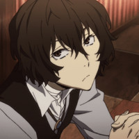

Bungo Stray Dogs é uma série de mangás japoneses, que mais tarde adaptados para um anime, escrito por Kafka Asagiri e ilustrado por Sango Harukawa. A história conta o cotidiano de membros de uma agência de detetives, o quais possuem poderes e habilidades paranormais e que resolvem casos considerados fora do alcance da polícia e militaresde Yokohama, cidade do Japão onde se passa o conto

A Agência de Detetives Armados é uma organização paranormal, reconhecida pelo governo, constituida por agentes com habilidades sobrenaturais e responsável por missõses e casos que são considerados fora do alcance da polícia militar ou do governo. A história conta do cotidiano a experiência de cada personagem durante essas missões, destacando cada personalidade de cada membro da agência.
Atsushi Nakajima é um jovem de 18 anos que cresceu em um orfanato desde novo. Sua aparição é a primeira no anime, mostrando sua forma miserável, que incessantemente prezava por comida e abrigo, procurando uma solução para sua vida e se lamentando por sair do único lugar o qual poderia chamar de lar, seu orfanato. Depois de uma pequena confusão em sua cabeça em mais uma crise faminta, ele fez a escolha de assaltar a primeira pessoa que passasse em sua frente, porém, o indivíduo mais "acessível" para o seu golpe foi um jovem, que encontrava-se sendo levado pelo rio abaixo, numa tentativa falha de suicídio por afogamento. Por possuir um coração bondoso e corajoso, acaba salvando a pessoa. Seu ato foi inconsciente de que iria mudar totalmente sua vida, e de que aquele indivíduo o arranjaria um novo motivo para continuar a viver e lutar para proteger outras pessoas
Atsushi tem cabelos acinzentados curtos acompanhados de uma franja escura. O corte desfiado de sua franja deixa o lado direito maior que o esquerdo, a franja decresce no mesmo sentindo que o "degradê", ficando acima de suas sobrancelhas. Sua pele é pálida e as sobrancelhas são finas, tendo a mesma colocação de seus cabelos. Seus olhos tem uma coloração especial e única, em degradê na colocação amarela e roxa. Atsushi pode ser descrito como um garoto com corpo esguio e magro, não apresentando qualquer músculo definido. O traje que recebeu após ser aceito na agência é composto por calça preta, a qual deixa um pouco de sua canela à vista, e os sapatos sociais, luvas, suspensório e gravata são todos da mesma coloração que sua calça, pretos. Ele também usa camisa social branca de mangas longas.
Sua habilidade paranormal chama-se "Besta Sob o Luar", permitindo que o jovem se transforme em um grande e poderoso tigre branco. No começo, ao estar nessa forma, o garoto perdia o controle sobre suas ações e ataques, o tornando um perigo para quem está ao seu alcance e não possui poderes sobrenaturais. Porém, mais tarde, Atsushi aprende a controlar sua habilidade com a ajuda da Agência.

Dazai Osamu é um membro da Agência de Detetives Armados e foi um ex-executivo da pior organização do submundo de Yokohama, a Máfia do Porto, mesmo que parecesse um homem muito comum, jovem e simpático, um o qual você facilmente confiaria para pedir uma informação. Mesmo que aja amigavelmente, Dazai pode ser mais manipulador e perverso do que a maioria que não o conheçe pensa. Seu passado é desconhecido, e sua personalidade é sombria, o tornando um homem misterioso desde os seus 15 anos. Sua primeira aparição foi combinada com a de Atsushi, sendo ele o indivíduo que estava sendo levado rio abaixo, e a curiosidade é que isso era uma tentativa de suicidio por meio de afogamento. Ao ser salvo pelo jovem, Dazai rapidamente repreendeu Atsushi por acabar com sua tentativa de ir embora desse mundod e uma vez. Porém, os dois são interrompidos por um homem alto e esguio que estava do outro lado do rio, olhando com uma expressão carranca para Dazai enquanto batia os pés no chão. Após isso, Dazai e o outro homem levam o jovem para um restaurante local para interroga-lo.
Dazai é magro e alto, com cabelos castanho-escuro e com ondulações em suas pontas, seus olhos castanho escuro. Sua roupa é composta de uma trincheira marrom, se aproximando de um tom cor de areia, acompanhado de um colete preto e uma gravata preta com um pingente turquesa, sua calça é bege e seus sapatos escuros. Ele tem bandagens ao longo do corpo inteiro, deixando apenas o rosto e as mãos ficarem visíveis.
Sua habilidade se chama "Não mais humano". Este poder permite que que ele anule as habilidades de outras pessoas com um simples toque. Sua habilidade depende de contato com a pele e está sempre ativa, fugindo um pouco controle de Dazai. Mesmo que não pareça ser uma habilidade efetiva para batalha, a inteligencia elevada e destaque no ambito estratégia o tornava um oponente poderoso
desculpa senhorita boneca precisamente detalhada da Kanna sem roupas